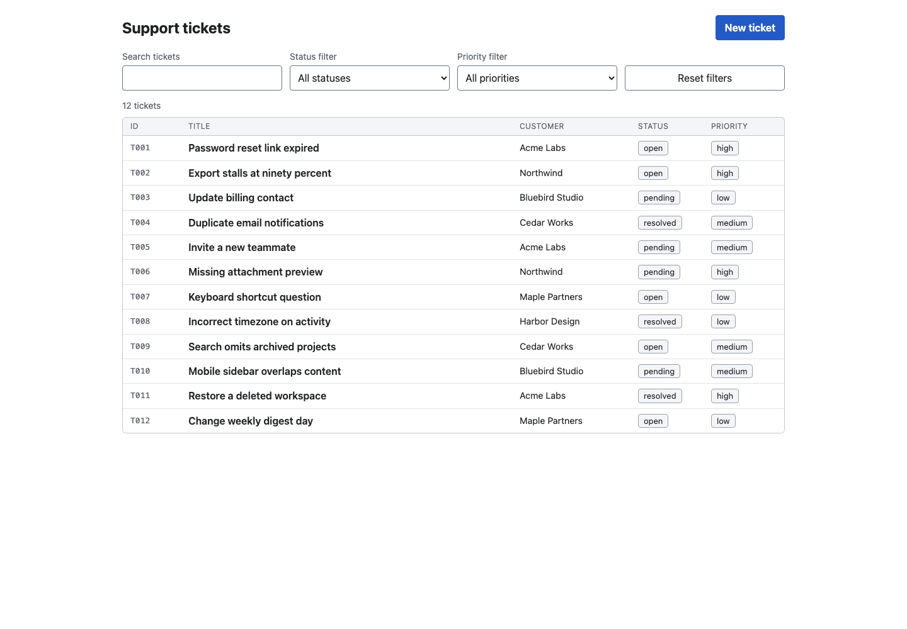
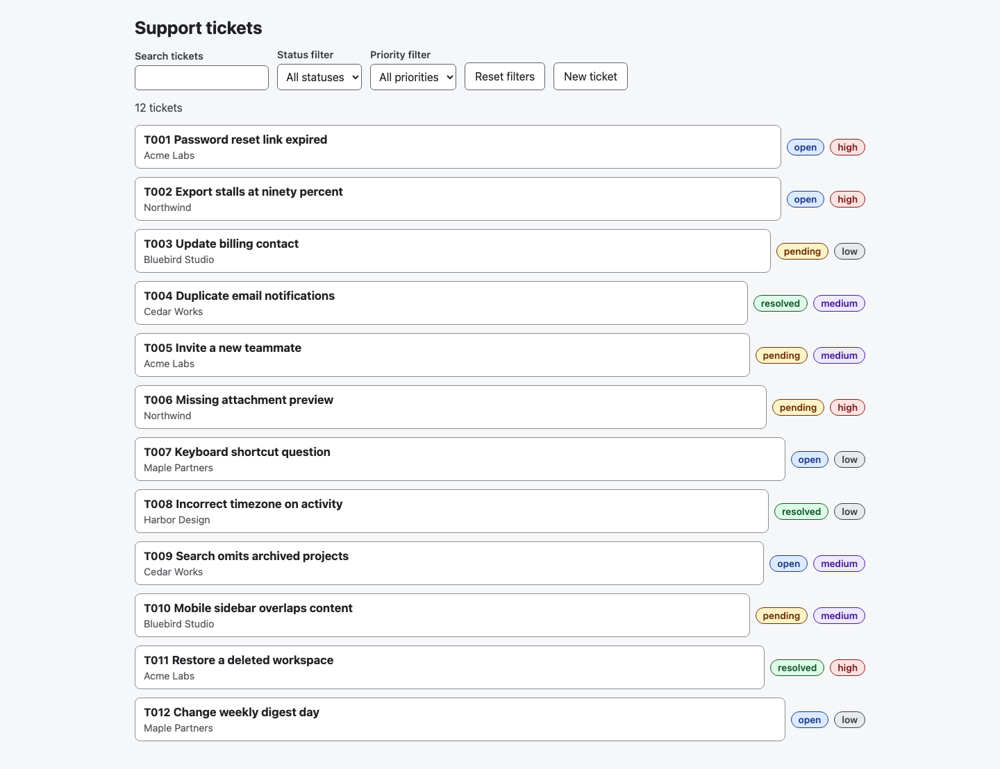
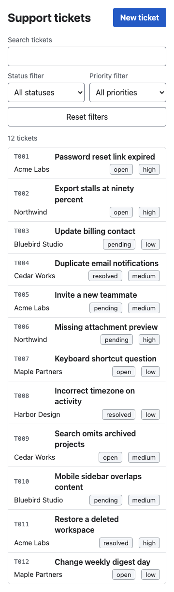
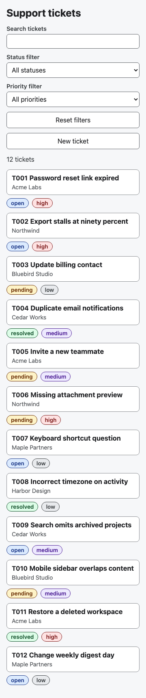

Finished UI comparison
Factory + Context received an additional 15 minutes. Both pass the same 15 behavior checks; independent review found data-integrity blockers in both. Factory’s workflow remained pending at the time cap.
Desktop
Factory + Context Mode
After the extra 15 minutes · 15/15 checks
Open full size
Superpowers
Original delivered version · 15/15 checks
Open full size
Mobile
Factory + Context Mode
After the extra 15 minutes · 15/15 checks
Open full size
Superpowers
Original delivered version · 15/15 checks
Open full size